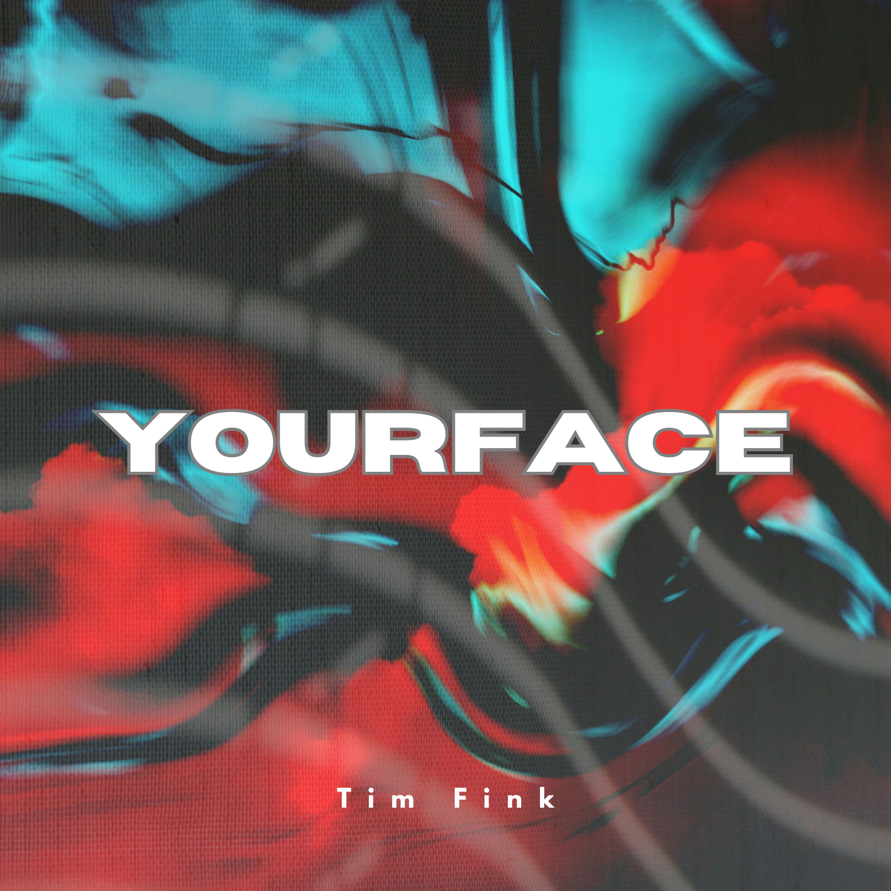

Du sagst nichts
Irgendwo zwischen verträumt und melancholisch.
Latest Tracks & Productions by Tim Fink
Irgendwo zwischen verträumt und melancholisch.

Atmosphärischer Vibe zwischen Ozean-Soundkulisse und melancholischem Flow.
Harte 808s treffen auf sphärische Synthesizer. Komplett in-house produziert und gemixt.

Ein experimentellerer Ansatz, der R&B-Vocals mit treibenden elektronischen Elementen verbindet.
Ein verträumter Rap-Track gemeinsam mit dem Hamburger Freund und Feature "808 Classic".